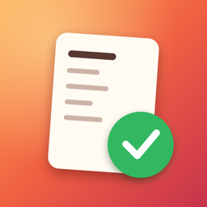

Scan any menu.
Find your perfect meal.
MenuMatch reads a restaurant menu on your iPhone, translates and explains it, and shows which dishes fit your diet, goals and taste. It is always honest about what a menu can't tell you.
See it before you order
Typical photos for dishes without one, and reviews and videos of the dish at this restaurant or anywhere, one tap away on YouTube, TikTok, Google and Maps.
Learns your taste
After your meal, MenuMatch can remind you to note what you ordered and how it was. Your next picks get better, on every device through iCloud.
Honest about allergens
MenuMatch never calls a dish safe. It shows what the menu states, what is typical for the dish and what is unknown, and gives you a hand-written card to show staff in their language.
Private by design
No account, no ads, no tracking. Menus are read on your device; your data stays on your devices and in your own iCloud.